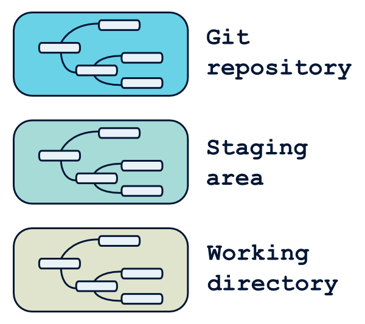
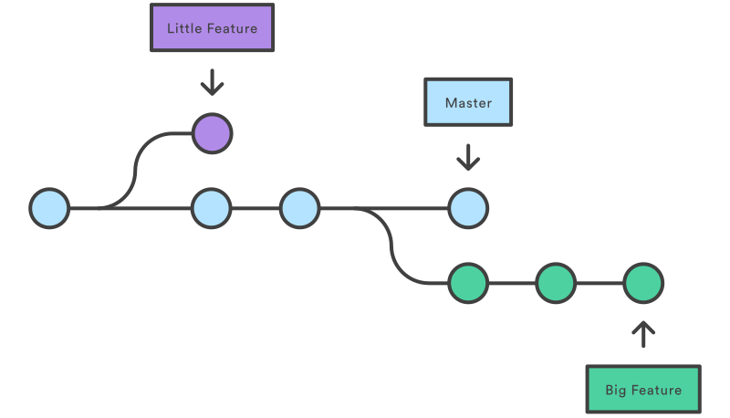

Le versioning (en bref ...)
1. Historique des modifications (application, document, présentation)
- ➔ Quoi / Qui / Quand / Pourquoi ?
- ➔ Annuler
2. Travail en équipe
- ➔ Ne pas écraser le travail
- ➔ Suivre l'historique
- ➔ Partager / Déployer
Qu'est-ce que GIT ?
- Créé en 2005 par Linus Torvald
- Objectifs : palier aux défauts des autres outils
- ➔ Performant (rapide et puissant)
- ➔ Distribué (≠ SVN)
- ➔ Support travail non linéaire (branches)
Pourquoi vous avez besoin de GIT dans votre vie ?
1. Peu importe votre métier : vous allez le rencontrer
- ➔ Développement / Scripting
- ➔ Administration (Gitlab, serveurs prod...)
- ➔ Déploiement
2. Utilisé partout
3. Incroyable
- ➔ Commits locaux (tester, sauvegarder, tester...)
- ➔ Une branche par fonctionnalité
- ➔ Un historique clair et soigné
Objectifs de cette formation
- Présenter la philosophie de GIT
➔ Pas exhaustif - Des clés pour commencer
➔ Utiliser GIT sur vos projets - Initialiser les bonnes pratiques
Are you ready ?
I. Un peu de théorie
1. Modèle distribué
Fonctionnement avec un repo central (Gitlab)

2. Les zones de travail en local
- Working directory : Fichiers modifiés (dans éditeur)
- Staging area : Index prêt à faire parti du prochain commit
- Git repository : Base de données des commits
2. Les zones de travail en local

3. Statut
git status
État actuel du 'staging' (bleu) et du 'working directory' (vert)
# Commits dans le 'Git repository'
git log
# Personnalisable
git log --graph --decorate --pretty=oneline --abbrev-commit --all
4. Les commits

4. Les commits
Un commit =
- Meta-données : identifiant sha1, auteur, date
- Référence vers le(s) commit(s) parent(s)
- Snapshot des fichiers modifiés
commit bdae142eea5d9cb85ba89dd913c48c28556cfe15
Author: Mysh3ll
Date: Wed Mar 18 22:06:13 2020 +0100
Init project formation git
Debut du projet de formation git
Un commit est local (≠ SVN)
5. Les branches (en très bref)
5. Les branches (en très bref)
Branche = étiquette pointant un commit
- Une feature / Un fix / Un POC → Une branche
- Rapide et pratique
- Facilite le partage
- Usez et abusez des branches
Particularités
`master`: Branche principale (convention)`HEAD`: Branche locale sur laquelle on se trouve
II. Un peu de pratique
1. Configurer son profil git
~/.gitconfig
[user]
name = Mysh3ll
email = peacefulloijkn@gmail.com
[alias]
ci = commit
co = checkout
st = status
br = branch
[remote "origin"]
url = https://github.com/Mysh3ll/formation-git-ses.git
fetch = +refs/heads/*:refs/remotes/origin/*
[push]
default = simple
.gitconfig / .gitignore peuvent être définis de manière globale
+ spécifiques au projet
2. Initialiser un dépôt
cd mon-projet
# Ce projet sera maintenant géré par GIT
git init
# Création d'un commit vide "First commit"
git ci --allow-empty
# ...Je commence à bosser
Ou depuis un dépôt existant
# On récupère le projet existant
git clone https://github.com/Mysh3ll/formation-git-ses.git mon-projet
# .. ou bien
git clone git@github.com:Mysh3ll/formation-git-ses.git mon-projet
cd mon-projet
# ...Je commence à bosser
3. Premières modifications
# Créer une branche (co = checkout)
git co -b ma-branche
# Créer un nouveau fichier (ci = commit)
git add nouveau-fichier.txt
git ci
# Supprimer ce fichier et modifier le précédent commit
rm -f nouveau-fichier.txt
git add nouveau-fichier.txt
git ci --amend
Pratique
- Créer un fichier texte dans un commit
- Ajouter du texte dans ce fichier => commit
- Effectuer une correction dans le fichier => commit
4. Partager son travail
# Récupère l'état du dépôt distant
git fetch origin
git push origin -u my-branch:mp-my-branch-renamed
Pratique
- Envoyer sa jolie branche sur le dépôt distant
- Mettre les initiales dans le nom de la branche